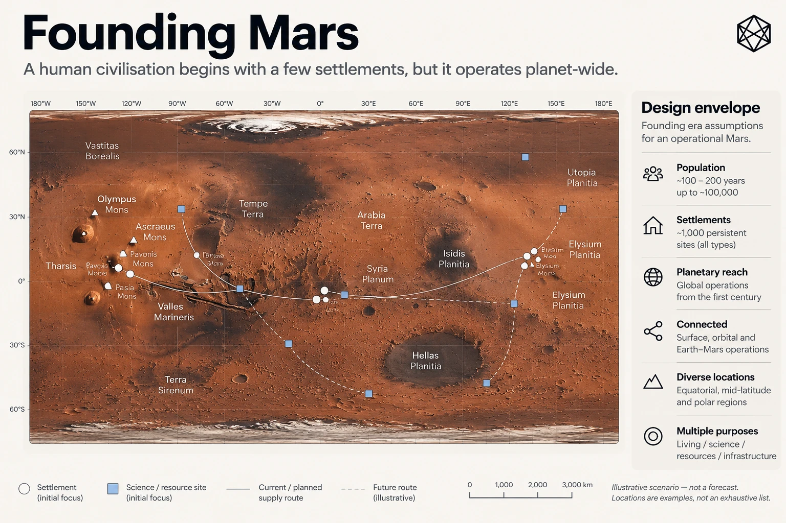
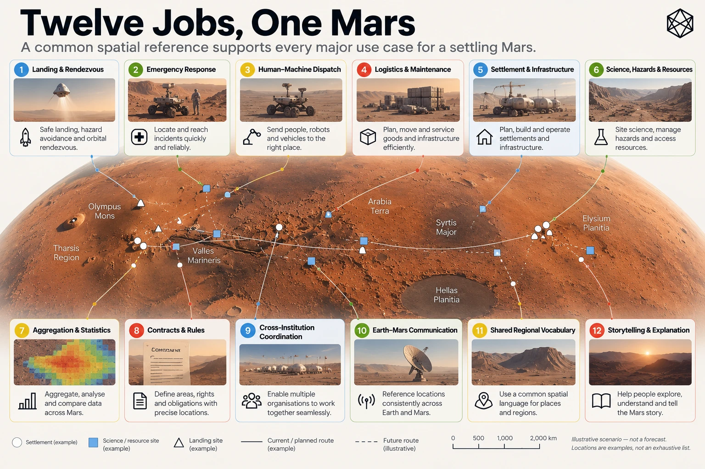
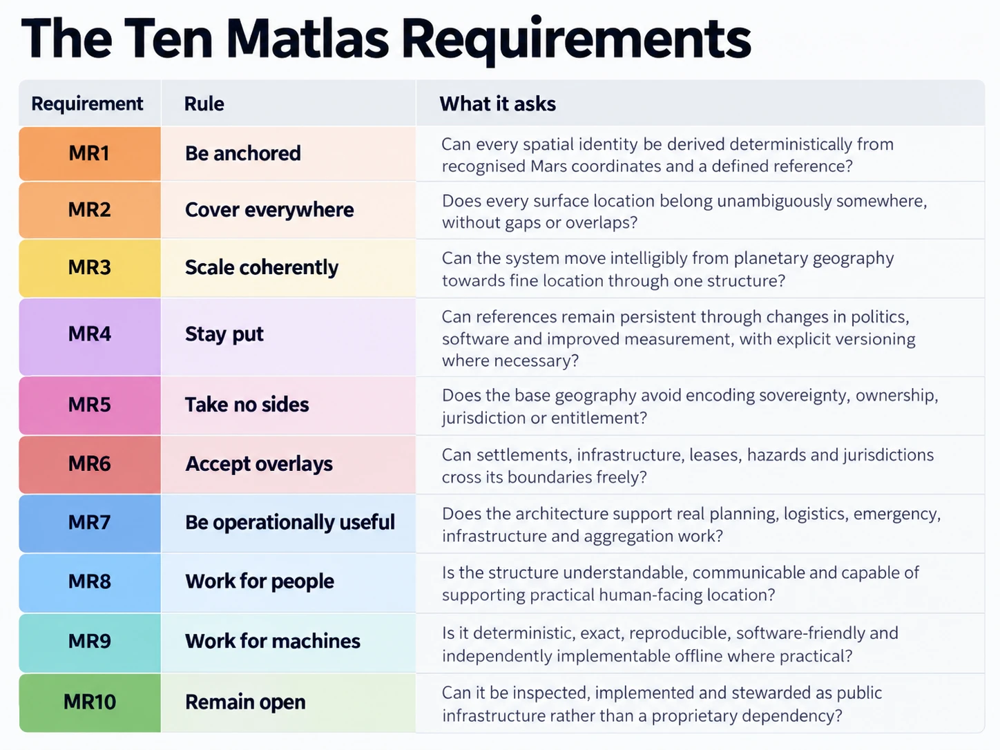

D - The Matlas Design Brief
Founding Assumptions, Twelve Operational Jobs and Ten Design Requirements
Matlas did not begin with a grid. It began with a question about what happens when an extensively mapped but uninhabited planet becomes the home of a permanent human civilisation.
Mars already possesses an exceptionally capable scientific geography. It has established coordinates, global imagery, elevation models, geological maps and recognised names for important physical features. Those systems provide the measurement and nomenclature on which settlement can build. Matlas proposes an additional layer for a different purpose: giving pieces of the Martian surface persistent structural identities that people, institutions and machines can use in common.
Before designing that layer, three things had to be established. First, what kind of early Martian civilisation should the architecture serve? Second, what practical jobs would its geography need to perform? Third, what requirements follow from those jobs?
This appendix records those decisions in a consolidated reference form. It also shows how the requirements informed the resulting architecture of Mars GRID, Mars BAR and Triplet.
The sequence matters:
Founding scenario → Operational jobs → Design requirements → Architectural choices
The requirements explain the architecture, rather than being retrospectively invented to justify it.
D.1 — The Founding Scenario

The design envelope
Matlas is designed around the founding era of permanent human settlement on Mars: approximately the first 100 to 200 years of sustained habitation.
This period is deliberately broad. The development of Mars could proceed rapidly, slowly or unevenly. It may involve periods of expansion, consolidation or interruption. The design does not depend on a particular date for the first permanent settlement, a forecast population trajectory or a prediction about when Mars will acquire mature political institutions.
Instead, it uses an illustrative upper scenario of:
Parameter | Founding design assumption |
|---|---|
Design period | Approximately 100–200 years of sustained settlement |
Permanent population | Up to approximately 100,000 inhabitants |
Persistent operational locations | Up to approximately 1,000 sites |
Settlement pattern | Sparse, geographically distributed and increasingly interconnected |
Institutional structure | Multiple independent organisations and emerging communities |
Spatial coverage | The entire planetary surface, including uninhabited terrain |
Operating environment | Shared by humans, autonomous systems and remotely operated machines |
The population and site figures are not forecasts, capacity ceilings or conditions that Mars must satisfy before Matlas becomes useful. They establish a demanding but plausible design environment in which a common geography might provide operational value.
A persistent site is not necessarily a settlement. The scenario includes inhabited communities alongside scientific stations, mines, industrial facilities, transport depots, power installations, communications relays, emergency shelters and other locations containing few people or none at all.
Even at the upper illustrative population, Mars would remain extraordinarily sparsely inhabited. Large distances could separate persistent activity, and much of the planet might never develop conventional streets, neighbourhoods or settlement names.
That sparsity is central to the brief. Geography must remain useful beyond the places where people live.
The founding assumptions in full
The following table consolidates the assumptions developed in Chapter 3. These are assumptions about the environment in which the proposed architecture is intended to operate, not additional formal Matlas requirements.
Founding assumption | Description | Consequence for the design |
|---|---|---|
1. Mars is already measured and mapped | Scientific reference systems, imagery, terrain models and established nomenclature precede permanent settlement. | Build upon existing measurement rather than replace it. |
2. Settlement remains sparse | Persistent activity is distributed across a largely uninhabited planet. | Geography must not depend on population density or prior development. |
3. Empty terrain matters | Science, logistics, resources, hazards, protection and infrastructure can make unoccupied ground operationally important. | Provide reference coverage beyond settlements and established routes. |
4. Humans and machines share operations | Crewed activity, remotely operated equipment and increasingly autonomous systems use the same physical surface. | Support both human interpretation and deterministic machine resolution. |
5. Institutions are plural | Agencies, companies, researchers, utilities, settlement authorities and independent communities may use different systems. | Enable common spatial reference without requiring common institutional control. |
6. Earth remains involved | Engineering, science, manufacturing, finance, legal activity and communication may continue to involve Earth-based participants. | Keep the common geography interpretable by people who have never visited Mars. |
7. Legal geography precedes political maturity | Operating permissions, leases, corridors, protection areas and restrictions can emerge before stable political divisions. | Support precise spatial context without prescribing jurisdiction or ownership. |
8. Organisations and boundaries change | Institutions may merge, disappear or reorganise; settlements expand and operating areas evolve. | Make the underlying geographic reference more persistent than the institutions using it. |
9. Connectivity cannot be guaranteed | Remote sites, vehicles and crews may operate without reliable live access to network services. | Avoid making location identity depend entirely on a central online registry. |
10. Language may diversify | English may be prominent initially, but future settlements can develop different languages, accents and conventions. | Separate canonical spatial identity from particular human-language representations. |
11. Culture remains unwritten | Future settlement names, regional identities, political borders, customs and historical meanings cannot be known in advance. | Leave cultural and political geography to future Martians rather than building it into the reference layer. |
Several implications deserve emphasis.
First, planetary coverage is not a claim over planetary territory. A common reference may divide the entire surface into identifiable pieces without deciding who controls them. A Quad does not become a country because it has boundaries, and a Click does not become a property parcel because its location is precisely defined.
Second, the physical ground is more persistent than most institutional arrangements applied to it. The same location might successively contain scientific equipment, a mining facility, transport infrastructure and part of a growing settlement. Different authorities may describe it using changing legal or operational boundaries. There is value in allowing all of those systems to refer back to a spatial identity that does not change with them.
Third, common geography does not require common software. A rover operator, scientific institute and settlement authority can retain different applications and specialist spatial representations while exchanging references to the same underlying location.
Fourth, human and machine needs are not identical. A computer may prefer compact binary identity, while a person may need understandable regions, memorable language and a location that can be spoken over a radio. A useful architecture must accommodate both without pretending they are the same interface problem.
The founding scenario therefore describes a Mars that is neither a tightly integrated expedition nor a mature planetary civilisation. It is geographically sparse, operationally distributed, institutionally diverse and culturally unfinished.
That is the world against which the Matlas design is assessed.
D.2 — Twelve Jobs for Martian Geography

The founding scenario produces twelve recurring operating jobs. They range from identifying a precise emergency location to describing an entire region of Mars, and from moving cargo to preserving the geographic meaning of historical records.
The jobs are intentionally practical. They concern what geography must help people and institutions do, rather than which mathematical properties a proposed grid might possess.
The twelve-job reference table
No. | Operational job | Spatial question | Geographic requirement |
|---|---|---|---|
1 | Land and rendezvous | Which landing, staging, recovery or meeting area do we mean? | Precise locations with surrounding operational context. |
2 | Emergency exact location | Exactly where is the casualty, stranded crew or failed vehicle? | Fine-grained location that can support an actionable response. |
3 | Dispatch humans and machines | Can different systems send people and equipment to the same destination? | Deterministic, transferable location identity. |
4 | Move and maintain things | Where is the container, valve, array, cache or asset? | Persistent references for equipment, infrastructure and delivery destinations. |
5 | Build settlements and infrastructure | How do we describe development before it has names? | Common geography for proposed developments, corridors and future sites. |
6 | Science, hazards, resources and protection | Which terrain is being surveyed, restricted, protected or treated as hazardous? | Stable reference beneath irregular scientific and operational overlays. |
7 | Aggregate and compare Mars | Against which stable areas do we count activity and compare change? | Persistent spatial units at several useful scales. |
8 | Contracts and rules | Where does a lease, licence, restriction or access right apply? | Stable spatial context supporting independently defined legal boundaries. |
9 | Coordinate different organisations | Can parties that disagree still identify the same territory? | Institutionally neutral common reference. |
10 | Mars–Earth shared understanding | How can outsiders understand the region being discussed? | Recognisable geographic context beyond raw coordinates. |
11 | Provide common geographic vocabulary | How do we talk about broad areas before political geography supplies them? | Systematic regional orientation without premature cultural naming. |
12 | Explain and remember | How can records and stories remain geographically intelligible over time? | Durable geographic references that survive institutional and historical change. |
What the jobs imply
The twelve jobs do not all demand the same type of spatial object.
Landing operations and emergency response may require exact destinations, while planning and scientific work need to describe areas and routes. Statistical analysis benefits from stable geographic containers. Legal activity may require precise irregular boundaries, while public communication often needs only enough regional context to make an event understandable.
A system designed exclusively around points would struggle to provide useful area hierarchy. A system designed only around large regions would be insufficient for precise dispatch. A system that required all boundaries to follow one grid would interfere with science, engineering, law and political development.
The jobs therefore establish several important principles before any geometry is chosen.
The geography must operate at multiple scales. Exact locations must remain connected to larger geographic context. The same place must be intelligible across independent institutions and human-machine interfaces. Common spatial identity must coexist with specialist maps and independently defined boundaries.
The jobs also expose a distinction between two kinds of precision.
An emergency location needs a sufficiently fine address to allow a responder to reach the relevant patch of surface. A contract may instead require an exact surveyed polygon, even when the common civil reference surrounding it is relatively coarse. Both are legitimate spatial needs, but neither implies that the entire operating geography should become an indefinitely precise coordinate system.
The resulting architecture must therefore be selective. It should supply the shared geography from which specialist systems can work, without attempting to absorb every spatial function into one universal model.
The twelve jobs establish what the system is intended to support. They are not evidence that the proposed system has already demonstrated satisfactory performance in every operational environment.
D.3 — The Ten Matlas Requirements

The twelve jobs are converted into ten design requirements, labelled MR1–MR10.
These constitute the formal Matlas design brief. They govern the architectural choices described in the main book and provide the standard against which those choices should be evaluated.
MR1–MR10 reference table
ID | Requirement | Design obligation |
|---|---|---|
MR1 | Be anchored | Derive spatial identity deterministically from a defined Martian coordinate reference, using the planet's established measurement framework rather than inventing an independent geography detached from it. |
MR2 | Cover everywhere | Provide exhaustive, unambiguous spatial reference across the planetary surface, including uninhabited and operationally unused terrain. |
MR3 | Scale coherently | Support multiple useful levels of geographic resolution, with deterministic containment between smaller and larger reference areas. |
MR4 | Stay put | Preserve the spatial meaning of established references through changes in scientific measurement, software and institutions; make geometry-changing revisions explicit and versioned. |
MR5 | Take no sides | Avoid encoding sovereignty, ownership, resource entitlement, jurisdiction or political legitimacy in the foundational reference geography. |
MR6 | Accept overlays | Allow settlements, infrastructure, legal areas, scientific formations, hazards and other specialist geographies to cross the common reference boundaries freely. |
MR7 | Be operationally useful | Support the recurring practical needs identified by the twelve jobs, rather than optimising geometry solely for mathematical elegance. |
MR8 | Work for people | Provide understandable geographic scales and human-facing interfaces suitable for recognition, communication and ordinary operational use. |
MR9 | Work for machines | Define deterministic geometry, canonical representations, unambiguous boundary rules and reproducible conversions, preferably without requiring continuous network access. |
MR10 | Remain open | Make the foundational rules, definitions, versions and conformance behaviour publicly inspectable and independently implementable. |
How the requirements work together
The ten requirements are related, but they are not interchangeable.
MR1–MR4 establish the spatial foundation. Geography must be anchored to measured Mars, cover the planet, provide a coherent hierarchy and retain stable meaning across time. Taken together, they favour a versioned reference structure whose identity can be reconstructed independently from defined rules.
MR5–MR6 establish institutional restraint. A common geographic layer must not decide who governs or owns the territory it describes, and neutrality must be made practical by allowing other systems to draw their own boundaries. A fixed GRID boundary is a reference distinction, not an instruction about how future settlements should develop.
MR7–MR9 establish operational usability. The geography must serve real tasks, remain intelligible to people and behave deterministically for machines. These requirements do not imply that humans and computers should use identical representations. They permit a common spatial identity underneath different operational interfaces.
MR10 establishes openness as a property of infrastructure. A foundational geographic reference should not become unintelligible when one organisation disappears or one provider stops operating. Public specification, reproducibility, conformance and disciplined versioning are therefore part of the design brief, rather than optional conveniences added after deployment.
The requirements deliberately do not include exact equal area, uniform adjacency, unlimited geometric resolution, optimal machine-index performance or the replacement of established scientific coordinates. Such properties may be central to other spatial systems, but they were not selected as foundational requirements for Matlas.
That distinction is essential to evaluating the architecture fairly.
D.4 — From Requirements to Architecture
Matlas addresses the brief through three related components.
Mars GRID supplies the persistent area hierarchy, from the entire planet through Quad, Zand, Province, Sector and Tile to kilometre-scale Click.
Mars BAR continues beneath Click, subdividing each Click into Courts and Cells and providing a compact, deterministic fine-location identity.
Triplet, using the M3B lexical architecture, provides a human-facing three-word representation of the underlying BAR location without changing the canonical machine identity.
The requirements-to-architecture table below records the principal design responses. It is a traceability reference, not a claim that every response has passed independent operational or human-factors validation.
Requirements-to-architecture traceability
Requirement | Principal Matlas design response |
|---|---|
MR1 — Be anchored | GRID is defined through Martian latitude and east-positive longitude against the frozen civil reference realisation MRR-1. Spatial references derive from defined angular geometry rather than individually allocated geographic records. |
MR2 — Cover everywhere | GRID divides the full planetary surface, including the polar caps. Deterministic boundary ownership ensures each valid surface position has a unique containing GRID lineage. BAR continues the same coverage within every Click. |
MR3 — Scale coherently | The GRID hierarchy provides nested area references from Mars to Click. BAR introduces Court and Cell beneath Click, preserving containment while serving the different task of fine addressing. |
MR4 — Stay put | MRR-1 freezes the civil ruler. B1 and N1 establish consistent membership at boundaries, while explicit geometry versions preserve historical interpretation when a later standard changes spatial meaning. |
MR5 — Take no sides | GRID units are technical reference areas without assigned sovereignty, jurisdiction, ownership or resource rights. BAR identities likewise describe locations rather than legal entitlements. |
MR6 — Accept overlays | Other spatial systems remain free to define irregular areas, routes, networks, settlement boundaries, scientific zones and legal polygons independently of GRID. Matlas provides shared reference underneath them. |
MR7 — Be operationally useful | GRID provides broad and local geographic context, BAR supplies few-metre addressability and Triplet offers human communication of the underlying identity. Together, they target the different spatial scales and uses established by the twelve jobs. |
MR8 — Work for people | The relatively shallow GRID hierarchy provides recognisable changes of geographic scale. Belts, Quads and other structural vocabulary aid orientation, while Triplet is designed to make fine addresses more suitable for human communication. Actual usability remains a matter for testing. |
MR9 — Work for machines | Canonical GRID paths, the global Click ordinal, BAR binary identity and deterministic Court/Cell subdivision allow independent encoding and decoding. B1/N1 rules, polar P1 branching and versioned protocol context support reproducible machine interpretation. |
MR10 — Remain open | The architecture is intended for public technical specification, independently reproducible algorithms, conformance testing and version-controlled releases. Long-term openness also requires maintained reference definitions and appropriate governance beyond the original design. |
Several design decisions deserve particular attention because they demonstrate how the requirements were balanced rather than simply maximised.
Direct angular geometry rather than equal area
GRID uses latitude and longitude because they connect the reference hierarchy directly to measured Mars. Regular GRID's boundaries are therefore comparatively straightforward to understand and reconstruct.
The cost is unequal surface area. Physical east–west width contracts as latitude increases, and equivalent angular units do not represent identical amounts of ground.
Matlas accepts this trade-off because MR1, MR3, MR4 and MR8 place substantial value on anchoring, coherent hierarchy, persistence and human legibility. Exact equal area was not included in the brief.
Adaptive polar geometry rather than one uniform global rule
Fixed longitudinal subdivisions become increasingly narrow towards the poles. GRID therefore changes geometric regime at 72° north and south.
Polar Rule P1 preserves the north–south scale while selecting adaptive east–west branching to improve physical proportions. The hierarchy continues unchanged, but sibling counts and some neighbourhood relationships become less regular.
This is another explicit trade-off. MR2 and MR3 require complete coverage and coherent containment, but they do not require identical branching everywhere or uniform neighbour topology.
Persistent identity rather than automatic geographic revision
Planetary reference models will improve over time. Automatically rebuilding a civil grid against each new scientific realisation could change which established reference owns a physical location.
MR4 instead favours persistence. MGRID:1 retains its defined geometry in MRR-1, and newer scientific measurements can be transformed into that civil reference.
This protects historic geographic meaning while creating a continuing obligation to maintain reliable reference-frame transformations.
Fine addressing rather than unlimited subdivision
GRID stops at Click because its primary purpose is to organise areas at recurring civil and operational scales.
BAR then addresses the different requirement of reaching a specific few-metre destination. Its Courts and Cells are not intended to prescribe town planning, property subdivision or building design.
The system stops again at Cell. Precision navigation, surveying, docking, robotics and local vertical addressing remain distinct activities that can use the common location without being replaced by it.
Human language rather than language-dependent geography
MR8 and MR9 are served through different representations of the same location.
BAR provides canonical machine identity. Triplet provides a human-facing representation through semantic word families, lexical assignment and confusion-resistance mechanisms.
A future revision to a language profile may alter how an address is spoken without changing the underlying Cell. Different language profiles can likewise represent the same canonical location.
This separation is important because the stability required of geography is different from the adaptability required of language.
D.5 — What the Brief Does Not Establish
The design brief provides a basis for making and evaluating architectural decisions. It does not, by itself, prove that Matlas is necessary, that its proposed geometry is optimal or that a future Martian society will adopt it.
Several limits are worth recording.
The founding scenario is not a prediction. The 100–200-year period, illustrative population and site count are design assumptions. A different history of settlement could produce different spatial priorities.
The twelve jobs are not exclusive to Matlas. Coordinates, conventional GIS, scientific nomenclature, local addresses, spatial databases and specialist systems already perform many of these functions well. Matlas proposes a particular common reference architecture between those systems, not their replacement.
The ten requirements do not select a mathematically unique answer. Different architectures could satisfy them, and different relative priorities could lead to a different result. Matlas's choice of a relatively shallow, angular, persistent hierarchy is a reasoned architectural judgement.
Technical determinism is not the same as operational validation. Algorithms and spatial counts can be tested mathematically. Independent implementations can be compared, and exact boundary ownership can be verified. Human orientation, speech intelligibility, error recovery, training requirements and real emergency performance require separate empirical evidence.
A design standard is not an adopted institution. Public specifications and independently implementable code can make shared infrastructure possible. Actual adoption, maintenance, stewardship and long-term legitimacy depend on decisions by future users and institutions.
These limitations do not invalidate the design brief. They define the claims it can reasonably support.
D.6 — The Design in Perspective
The foundational logic of Matlas can now be summarised without reference to any particular Quad, Click or word.
Founding Mars may contain relatively few people, but those people could be spread across a vast and already well-measured world. Their organisations will need to operate over uninhabited terrain, coordinate humans and machines, maintain infrastructure, describe future development, protect scientific areas, exchange precise locations and preserve records over long periods.
Existing Martian measurement and nomenclature provide an excellent foundation. What they do not independently prescribe is one exhaustive, persistent hierarchy of civil reference areas suitable for those recurring organisational tasks.
The twelve jobs identify that possible gap. MR1–MR10 turn it into an explicit design brief. GRID, BAR and Triplet then provide one proposed architectural answer.
The result is deliberately limited. It gives Martian locations stable structural identity without assigning political or cultural meaning to them. It allows specialist systems to remain specialist, local communities to develop their own addresses and future institutions to establish boundaries appropriate to their purposes.
The underlying operating principle is the same one established at the beginning of the project:
Build what benefits from being common. Leave open what benefits from being lived.
That is the Matlas design brief. Based on that the Matlas Grid & Bar Systems have been developed.